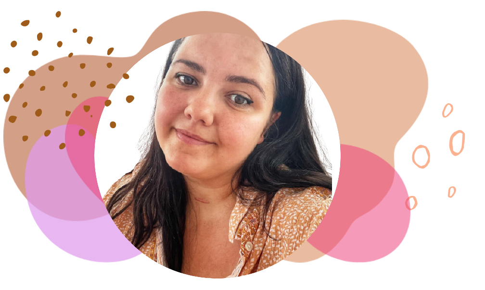

Salutare, bine ai venit pe site-ul meu!
numele meu este Greta Stefania Lumanare

Sunt mamica, sotie si femeie independenta.
De 5 ani locuiesc in UK si am reusit sa imi fac un viitor aici. De fel am fost mereu o persoana introvertita insa mamicia si faptul ca trebuie sa ma reintorc la munca dupa concediul de maternitate cand bebelina mea avea doar 9 lunite m-au indemnat sa imi schimb total perspectiva.
Acum iubesc ceea ce am devenit, imi place sa descopar povesti noi, sa cunosc oameni si sa imi asum riscuri.
Fac cu pasiunea ceea ce fac, simt ca este menirea mea sa inspir si sa ajut alte femei.
Te pot ajuta si pe tine! Nu conteaza varsta, studiile sau tara in care esti!
Cateva motive pentru care beau zilnic Aloe Vera gel!
🌸Igiena dentara sanatoasa
🌸Un bun calmant
🌸Ajuta la o digestie sanatoasa
🌸Intareste imunitatea
🌸 Aport de minerale necesare organismului:calciu,sodiu,fier,potasiu,crom, magneziu, mangan, cupru, zinc
🌸 Aport de vitamine:A,B1,B2,B6,B12,C,E,Acid Folic
🌸Proprietati anti-inflamatorii
🌸 Conceputa special pentru tenul mixt, care poate fluctua si varia semnificativ, Sonya daily skincare kit are la baza Aloe vera super concentrata si alte ingrediente vegetale hidratante.
🌸Natura se imbina cu stiinta in crearea acestei formule revolutionare pe baza de gel, datorita careia beneficiile Aloe vera ajung exact acolo unde pielea are cea mai mare nevoie de ele, printr-o textura lejera, care lasa tenul proaspat si intinerit.
🌸 Contine colagen si elastina pentru mentinerea aspectului neted, moale si suplu al pielii, contribuind la pastrarea unui pH echilibrat. Aloe Moisturizing Lotion este excelenta pentru ingrijirea fetei, mainilor si corpului, contribuind la contracararea efectelor poluarii si agresiunii factorilor de mediu. In cazul aplicarii machiajului, aceasta se poate realiza numai dupa absorbtia completa a emulsiei.
Cere detalii!
🌸Indispensabil oricarei truse de prim-ajutor
🌸Ideal pentru iritatii,arsuri sau leziuni cutanate minore
🌸Asigura protejarea parului fata de actiunea factorilor de mediu
🌸Calmarea epidermei dupa epilari cu ceara
🌸 Înțepături,tăieturi,lovituri, mușcături,minore
🌸Hidrateaza pielea, inclusiv scalpul.
🌸Este ideal pentru intreaga familie.
Desi cunosteam produsele Forever Living de mult timp de la bunicii apoi de la parintii mei, nu am aflat niciodata de oportunitatea afacerii. Abia cand am ajuns in UK am intalnit afacerea, care a venit exact la momentul oportun. Initial, am inceput ca consumator pentru ca eram sceptica, nu credeam in industria network marketing si ma gandeam ca persoanele ce activeaza acolo au pile sau pur si simplu noroc. Insa dupa inca cateva luni mi-am dat o sansa, am zis ca am nevoie de banuti si oricum nu reuseam sa merg la lucru fizic. Ma bucur enorm ca am facut asta pentru ca acum sunt aici si nu m-a implinit numai partea financiara ci schimbarea pe care am vazut-o la mine, am devenit mai pozitiva, mai energica si mai sociabila.!
Copyright © 2022 MSK. All Rights Reserved.
Design: Moscu Mariana